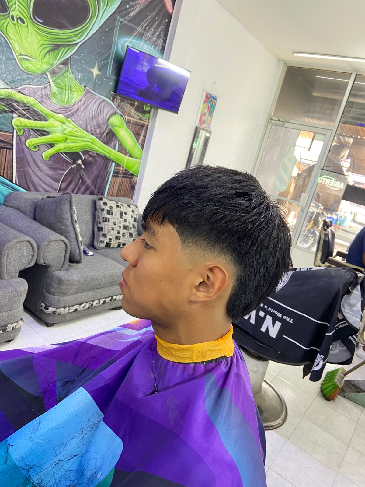
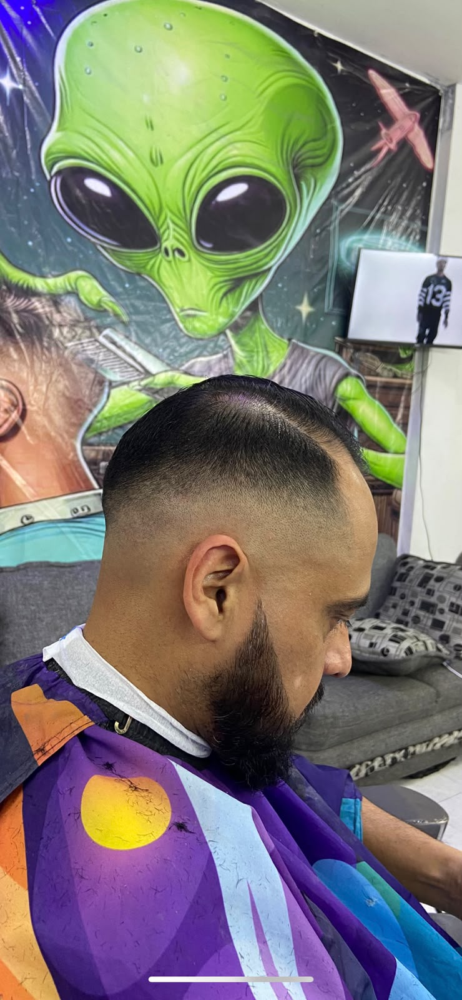
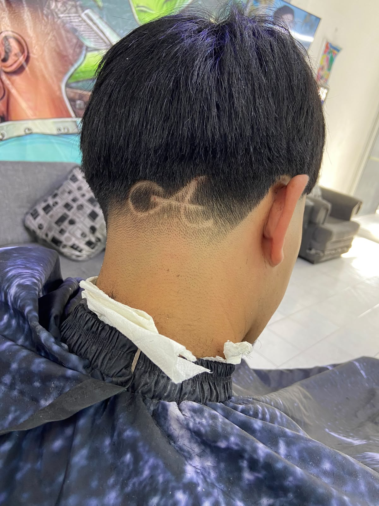

Contornos limpios y desvanecidos milimétricos. No dejamos detalles al azar.
Plática de barrio, buena música y respeto. Te sientas como en casa.
Productos de calidad premium para cuidar tu cabello y barba.
Elige el tuyo y quédate con un estilo unico

La versión moderna y sutil de un clásico rebelde. Mantiene la esencia del mullet tradicional con los laterales cortos, pero con una transición más suave y una longitud más discreta en la nuca. Perfecto para quienes buscan un estilo urbano, atrevido y con mucha personalidad sin llegar a extremos.
$120 MXN Apartar Corte
La evolución del estilo urbano. Destaca por un flequillo recto o corto combinado con un texturizado intenso en la parte superior que aporta volumen, movimiento y un aire muy fresco. Es el corte contemporáneo por excelencia para quienes buscan un 'look' desenfadado, fácil de peinar y con mucha textura.
$220 MXN Apartar CORTE
El rey de la versatilidad y la elegancia. Este desvanecido comienza desde muy abajo, justo por encima de la oreja y la nuca, logrando una transición impecable y limpia hacia la parte superior. Es el corte ideal para mantener un aspecto pulcro, sofisticado y de bajo mantenimiento.
$150MXN Apartar CORTE